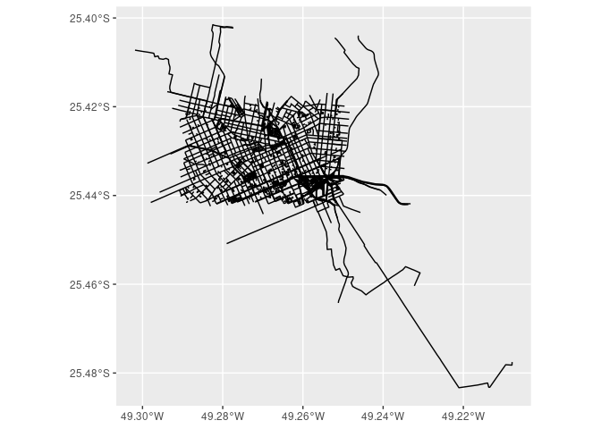
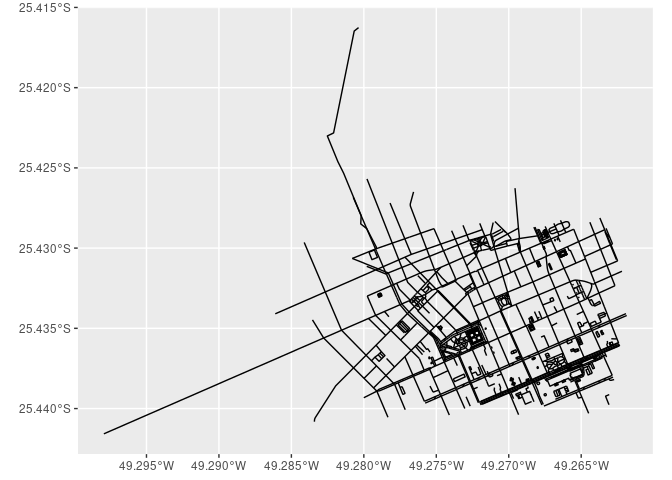

rosmosis allows one to download and run Osmosis from R. Osmosis is a command line application for processing OpenStreetMap data which consists of several different pluggable components that can be chained to perform large operations. The package currently does not aim to offer functions that covers the entirety of Osmosis’ API, and instead offers limited support to running Osmosis through the run_osmosis() function.
Installation
Development version:
# install.packages("remotes")
remotes::install_github("dhersz/rosmosis")Usage
Currently, the main (and only) way of using Osmosis with rosmosis is through run_osmosis(). This function takes the path to Osmosis and a string listing the command that should be sent to it.
Let’s see how it works using the sample data bundled with the package. In the following code snippet, we use the function to crop a PBF file using a bounding box. We also use the osmosis_path() function, that looks for a previously cached Osmosis application and returns its path, downloading it if necessary.
library(rosmosis)
library(ggplot2)
cur_osm <- system.file("extdata/cur.osm.pbf", package = "rosmosis")
fs::file_size(cur_osm)
#> 513K
original_pbf <- sf::st_read(cur_osm, layer = "lines", quiet = TRUE)
ggplot(original_pbf) + geom_sf()
output_path <- tempfile("cropped_cur", fileext = ".osm.pbf")
osmosis_command <- paste0(
"--read-pbf ", cur_osm, " ",
"--bounding-box ",
"top=-25.4290 left=-49.2792 bottom=-25.4394 right=-49.2629 ",
"completeWays=yes ",
"--write-pbf ", output_path
)
run_osmosis(osmosis_path(), osmosis_command, echo = FALSE, spinner = FALSE)
fs::file_size(output_path)
#> 210K
cropped_pbf <- sf::st_read(output_path, layer = "lines", quiet = TRUE)
ggplot(cropped_pbf) + geom_sf()